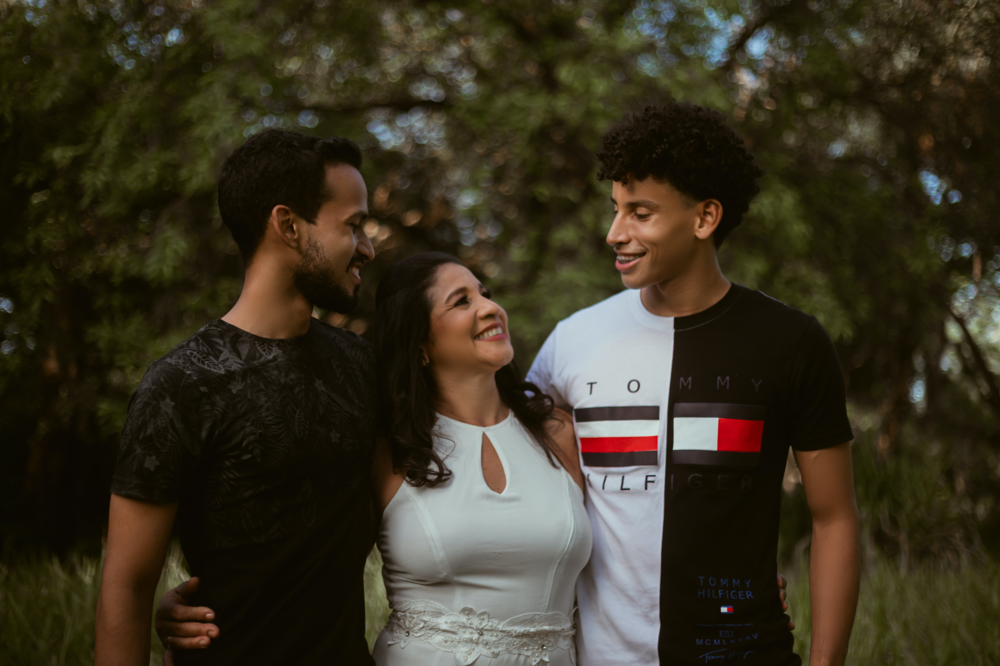
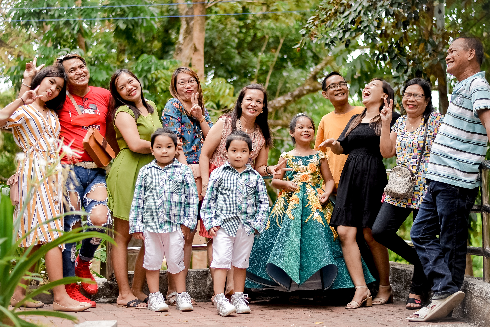

This website was made to help individuals connect with their extended family members whom they either do not know or would like to know more about. This website can help you answer your family tree questions and maybe even questions you might have about yourself. The data or information needed for this website to run smoothly or for content to be more accessible to users would be the amount of data received by users. The data received by the users would also have to be valid and accurate. Visitors would want to come to my site instead of others due to the mere fact that there are not many other sights like that that are widely used by everyone.

This site will also be extremely user-friendly with just the right amount of simplicity. This website is targeting anyone with access to the internet that wants to know more about their ancestry and how their extended family members are doing. On the Home Page, there will be simple wordings of what this site is intended for along with a button that will redirect users to creating their own account. I also plan for there to be some form of way to say why the website was made. That reason is, I do not know much about my own extended family members and everyone I ask in my family does not know any much than I do.
I created this website to not only help others with their understanding of their extended family but mostly to help my future generations learn about their extended families. I intend to add a very fast and easy verification process where people who create an account must verify a few things in order to be placed accurately in their own family tree. This will also allow them to be seen by other extended family members in their family tree.